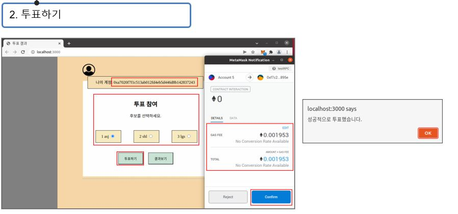

Blockchain-based online voting system
___________________________________________

투표하기 기능의 수행 화면은 위 이미지와 같습니다.
투표 참여 부분에 투표하고자 하는 후보자를 선택한 후에 투표하기 버튼을 누르게 되면 메타마스크의 알림창이 나타나고
스마트 컨트랙트가 이루어지는 계정, 스마트 컨트랙트가 이루어지는데 소모되는 가스 비용을 확인할 수 있고
컨펌버튼을 클릭하게 되면 성공적으로 투표가 완료되었다는 메세지가 나타납니다.
그러면 앞서 선택한 후보자의 투표수가 증가한 것을 알 수 있고
투표전에 보유한 이더리움의 양보다 투표 후에 이더리움이 더 적어진 것을 확인함으로써
스마트 컨트랙션이 이루어지면서 가스가 정상적으로 소모되었다는 점을 확인할 수 있습니다.

true/false값만 들어갈 수 있는 voters배열이 존재하는데
해당 배열에는 앞서 진행한 투표하기가 정상적으로 실행이 되면 해당 인덱스에 true값이 담기게 되고
이를 이용해서 이중투표 및 중복투표 방지 기능을 구현하는데 사용하였습니다.
투표하기 에서 진행했던 동일한 계정으로 이중투표를 진행하게 되는 경우
투표하기 와 동일하게 투표하고 싶은 후보자를 선택한 다음 투표하기 버튼을 누르게 되면 메타마스크 알림 창이 뜨게 됩니다.
그러나, 이번에는 투표를 한 이후에 한번 더 이루어지는 작업이기 때문에
앞선 투표로 인해 해당 인덱스가 true가 들어가게 되면서 정상적인 접근이 아니므로 에러 메시지를 반환하게 됩니다.
하지만 이 에러 메시지를 무시하고 Confirm을 진행하게 되면 스마트 컨트랙트가 이루어지지 않기 때문에 ETH의 감소가 이루어지지 않고
Confirm이 표시되지 않고Failed가 뜬 것을 확인할 수 있습니다.
마지막으로 투표결과 페이지를 확인하게 되면 정상적으로 투표수가 증가하지 않는 걸 확인할 수 있습니다.

이미 기호2번인 후보자에게 투표를 진행한 계정이 있습니다.
동일한 계정으로 똑같이 기호2번인 후보자에게 투표를 진행 할 시 좌측 이미지와 같이 오류메세지가 발생하고,
이어서 오류메세지를 무시한 채 컨펌 버튼을 클릭하게 되면 스마트컨트랙트가 이루어지지 않고, 이더리움 또한 감소하지 않습니다.
중앙에 위치한 이미지와 같이 Failed가 화면에 출력되는 것을 확인할 수 있습니다.
우측 이미지 또한 같은 후보자에게 중복 투표를 했을 때 득표수가 전혀 증가하지 않는 모습을 담고 있습니다.

아까와 다른 인덱스 계정으로 테스트를 하기 위해 해당 계정으로 접속을 진행하겠습니다.
앞선 과정과 동일하게 migrate 수행으로 인해 이더리움이 소모되었음을 확인했습니다.
서버를 실행시키고 메타마스크에 개인 키를 입력해서 가나슈계정을 읽어오게 되면
정상적으로 이더리움을 읽어올 수 있습니다

순서는 앞에서 진행했던 투표하기와 동일합니다.
우측 이미지에서는 3번 후보자에게 투표하기 버튼을 클릭했을 때 나타나는 창에서 소모되는 이더리움 값을 출력하고 있습니다.